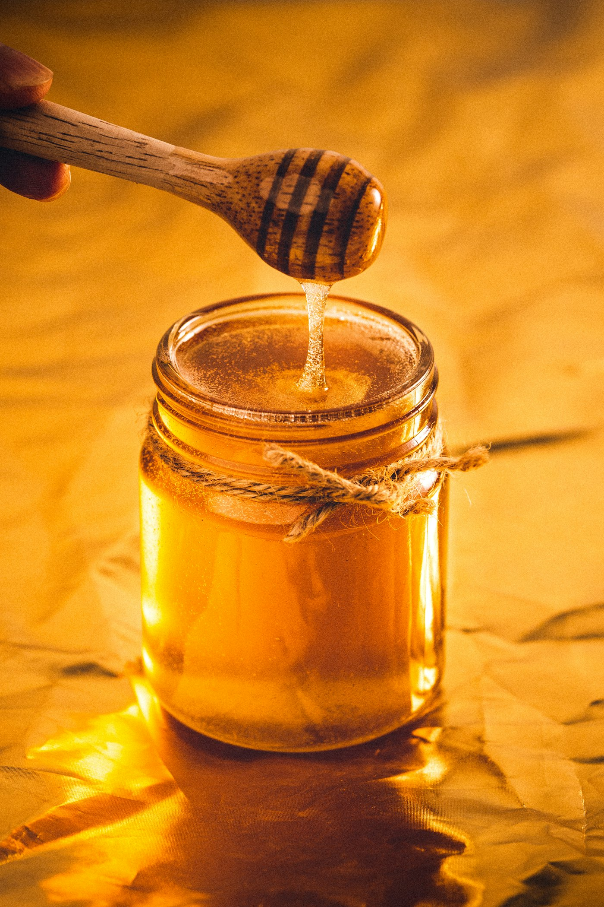
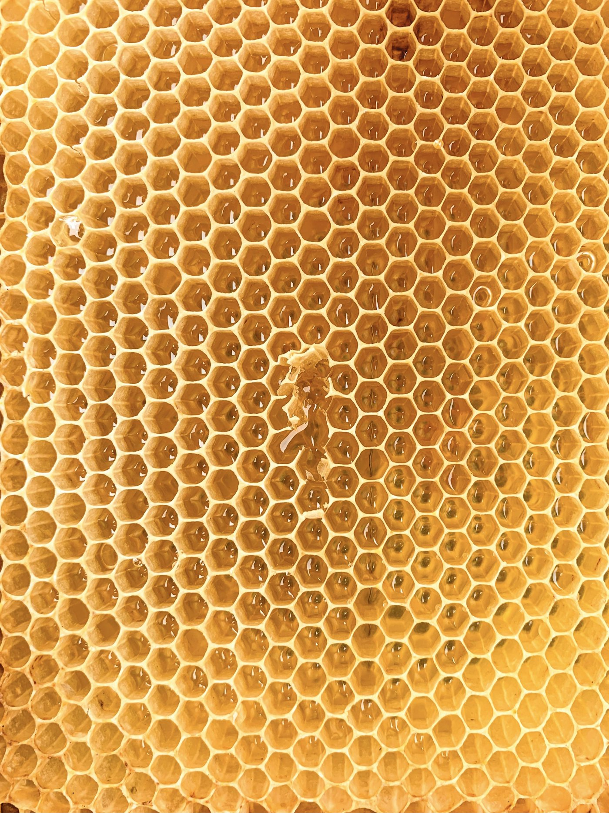
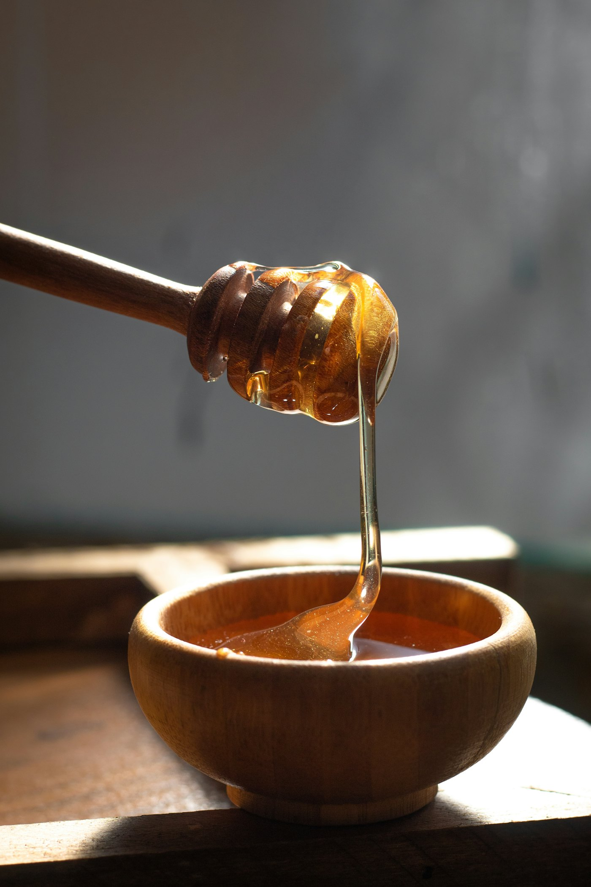

SANGOL HONEY

시럽 단맛이
부담스러우셨다면
해발 600m 산골 양봉장에서 봄 한철에만 뜨는 아카시아 꿀입니다.
이런 고민 있으셨죠
단맛은 필요한데
단맛은 필요한데
고르기가 어려워요
- 꿀 향이 너무 진해서 요거트 맛이 묻혀요
- 병마다 맛이 달라서 다시 사기 망설여져요
- 어디서 어떻게 만든 꿀인지 알고 싶어요
산골 꿀은 이렇게 달라요
순한 향, 고른 맛,
순한 향, 고른 맛,
만든 곳이 보이는 꿀
- 아카시아만한 가지 꽃에서
뜬 꿀 - 데우지 않고거름망으로만
걸러 냄 - 날짜 라벨병에 담은 날을
적어 둠
만드는 과정
벌통에서 병까지
벌통에서 병까지
네 단계
- 600양봉장 높이(m)
- 11년 채밀 횟수
- 0더한 재료

- 015월, 꽃이 필 때만 뜹니다다른 꽃꿀이 섞이지 않게 기간을 지킵니다.
- 02다 익은 벌집만 고릅니다벌이 밀랍으로 덮은 칸만 뜹니다.
- 03데우지 않고 거릅니다거름망으로만 걸러 꽃 향이 남아요.
- 04유리병에 담아 보냅니다담은 날짜를 라벨에 적습니다.
이렇게 드세요
하루 한 스푼,
하루 한 스푼,
이렇게 즐겨요
- 요거트에 한 스푼향이 순해서 과일 맛을 덮지 않아요.
- 토스트에 얇게버터를 바른 뒤 꿀을 얹어 보세요.
- 한 김 식힌 차에너무 뜨거운 물보다 향이 오래 남아요.
드셔 본 분들의 이야기
후기는
후기는
실제 손님 글만 싣습니다
후기 자리사장님이 주신 실제 구매 후기를
그대로 넣는 곳입니다.
그대로 넣는 곳입니다.
상품 정보
한눈에 보는
한눈에 보는
상품 정보
- 품목
- 아카시아 꿀(샘플)
- 용량
- 500g / 1kg
- 원산지
- 국내산(샘플 문구)
- 보관
- 직사광선을 피해 실온
기온이 낮으면 하얗게 굳을 수 있어요.
따뜻한 물에 병째 담그면 다시 풀립니다.
꼭 읽어 주세요
배송과 교환 안내
- 배송
- 사장님이 정한 기준을 넣습니다
- 교환
- 사장님이 정한 기준을 넣습니다
- 주의
- 돌이 지나지 않은 아기에게는 꿀을 먹이지 않습니다

내일 아침,
한 스푼부터
주문하시면 산골 양봉장에서 바로 보내 드립니다.